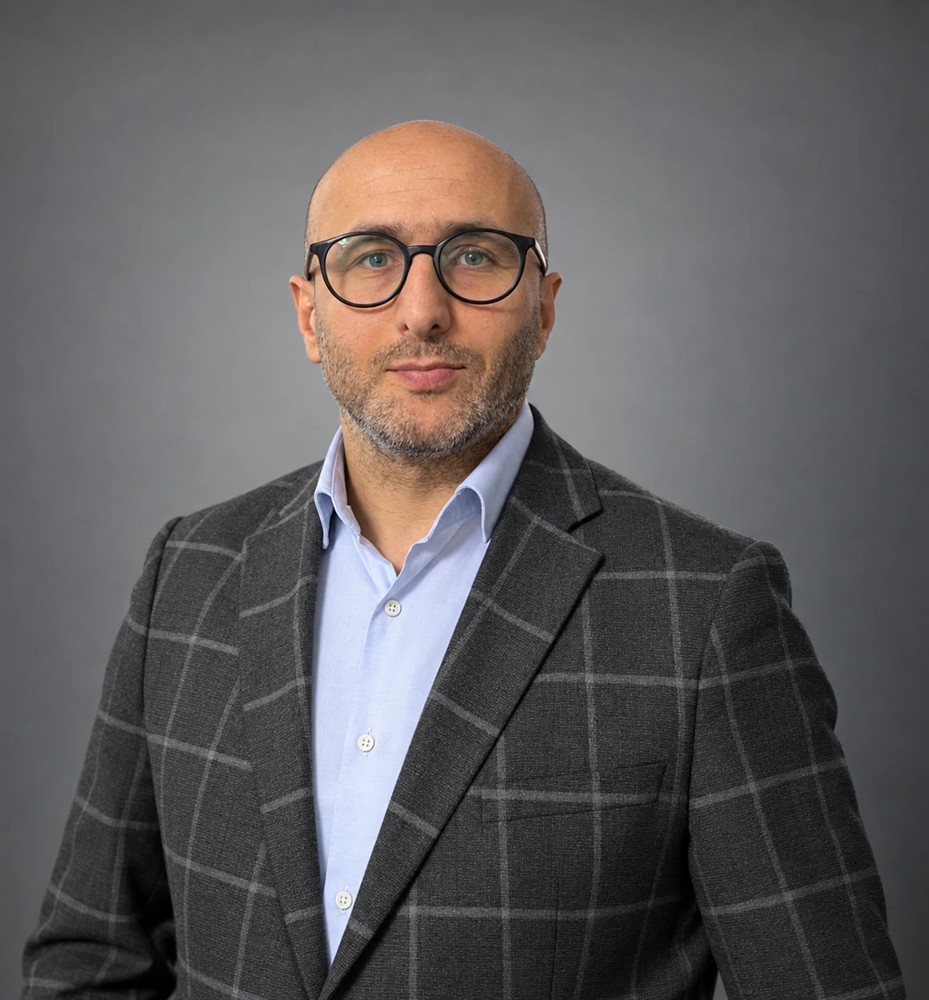

KURUCUMUZ
Kurucumuz Mehmet Cenik
1998’den bugüne uzanan sektör deneyimi, Cenik Elektrik’in temelini oluşturmaktadır.

KURUCU
Mehmet Cenik
Kurucumuz Mehmet Cenik’in, elektrik sektöründe 1998’den bu yana edindiği 28 yıllık deneyim, Cenik Elektrik’in temelini oluşturmaktadır. Satış, pazarlama, saha yönetimi ve ticari planlama alanlarında kazandığı tecrübe; şirketin güvenilir, hızlı ve müşteri odaklı hizmet anlayışına yön vermektedir.
2026 itibarıyla Cenik Elektrik çatısı altında, geçmişten gelen bilgi birikimini güçlü ve sürdürülebilir iş birlikleri kurma hedefiyle geleceğe taşımaktadır.
Tecrübe, güven ve güçlü iş birlikleri.